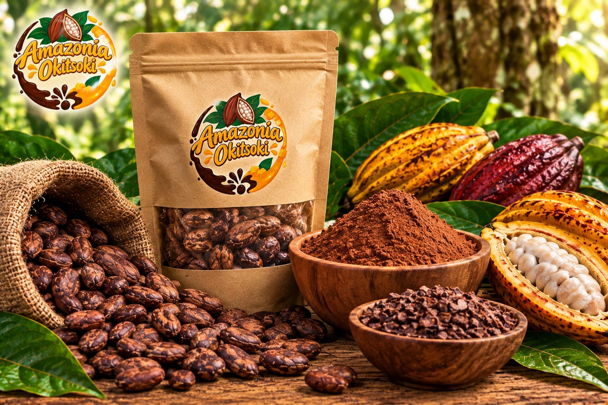
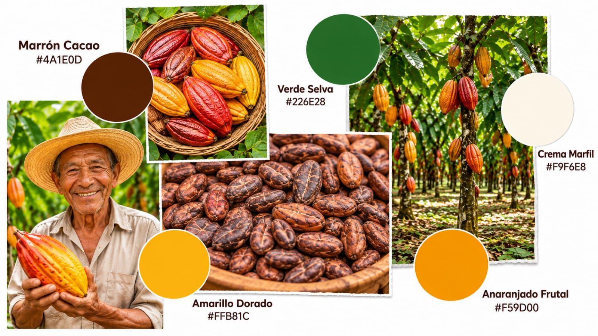
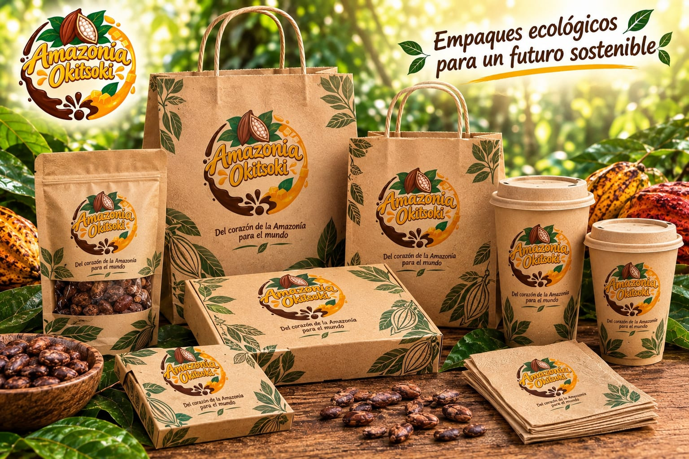

Información General de la Marca

Nombre de marca: Amazonía Okitsoki
Rubro: Alimentos y bebidas – Chocolatería artesanal y confitería de autor
Concepto: Tradición artesanal, identidad asháninka y riqueza natural de la selva central.
Eslogan: «Amazonía Okitsoki, el verdadero grano de cacao artesanal de Satipo»
Estilo gráfico: Artesanal gourmet y orgánico contemporáneo
Personalidad: Artesanal, juvenil, auténtica, innovadora, deliciosa y natural.
IMAGOLOGÍA

| Ficha técnica | Descripción |
|---|---|
| Definición | Estudia cómo se construye y percibe la imagen de una marca ante el público. |
| Aplicación | Construcción de la imagen corporativa de Amazonía Okitsoki. |
| Objetivo | Transmitir una imagen artesanal, natural, confiable, de alta calidad y representativa de Satipo. |
| Personalidad | Fresca, moderna, cercana, auténtica e innovadora. |
| Público objetivo | Jóvenes y adultos de 14 a 50 años (residentes de Satipo, estudiantes, trabajadores y turistas) que buscan productos locales y naturales. |
| Identidad visual | Imagotipo inspirado en la mazorca de cacao nativo, hojas amazónicas y trazos de chocolate fundido con rellenos frutales. |
| Colores corporativos | Marrón Cacao (#4A1E0D), Verde Selva (#226E28), Amarillo Dorado (#FFB81C), Anaranjado Frutal (#F59D00) y Crema Marfil (#F9F6E8). |
| Percepción deseada | Que el consumidor relacione la marca con el cacao nativo de Satipo, la cultura local y la chocolatería artesanal de calidad. |
ICONOLOGÍA

| Ficha técnica | Descripción |
|---|---|
| Definición | Estudia e interpreta los significados simbólicos y culturales de las imágenes. |
| Aplicación | Uso de símbolos relacionados con el cacao nativo, la flora amazónica y la cultura asháninka. |
| Objetivo | Transmitir origen territorial, trabajo artesanal y valor cultural mediante elementos gráficos. |
| Símbolo principal | Mazorca de cacao nativo abierta con sus granos internos visibles en la parte superior central. |
| Elementos secundarios | Hojas tropicales de la selva, trazos curvos y gotas de chocolate fundido, y ondas de relleno frutal. |
| Estilo gráfico | Ilustración orgánica artesanal y tipografía fluida en composición circular equilibrada. |
| Significado | Representar el origen agrícola de Satipo, la pureza del cacao y su transformación en chocolatería gourmet. |
Interpretación de los símbolos:
| Símbolo | Significado |
|---|---|
| Mazorca y granos de cacao | Representan la materia prima pura, el origen en Satipo y la autenticidad del producto artesanal. |
| Término Okitsoki | Proviene de la lengua asháninka («semilla» o «grano») y vincula la marca con las comunidades productoras locales. |
| Hojas amazónicas | Simbolizan la naturaleza, la frescura, la biodiversidad y el respeto ecológico por la selva. |
| Gotas y trazos de chocolate | Evocan la fluidez, la textura cremosa del chocolate derretido y la calidad gourmet. |
| Trazo frutal dorado/naranja | Representa las mermeladas artesanales de frutas nativas (maracuyá, camu camu, coco, cocona, aguaje). |
IMAGEN VERBAL

| Ficha técnica | Descripción |
|---|---|
| Definición | Conjunto de palabras, frases, mensajes y expresiones que construyen la identidad comunicativa de una marca. |
| Aplicación | Nombre comercial, eslogan, empaques, catálogo digital, página web y redes sociales. |
| Objetivo | Comunicar la personalidad cercana, natural y artesanal de Amazonía Okitsoki mediante palabras. |
| Nombre | AMAZONÍA OKITSOKI. |
| Eslogan | «Amazonía Okitsoki, el verdadero grano de cacao artesanal de Satipo». |
| Tono comunicativo | Cercano, amigable, cálido, sencillo y auténtico. |
| Palabras clave | Cacao nativo, Satipo, Okitsoki, artesanal, selva central, frutas nativas, natural y origen. |
| Tipografía propuesta | Tipografía Script / Lettering artesanal para el logotipo y Sans Serif (Montserrat o Arial) para textos informativos. |
| Estilo verbal | Cercano, sugerente, emotivo y orgulloso de los insumos locales. |
La imagen verbal de Amazonía Okitsoki transmite una experiencia ligada al sabor natural de la selva central, la elaboración artesanal y el orgullo por los productos de Satipo.
«El sabor del mejor cacao de nuestra selva en cada chocolate. Nuestros chocolates artesanales combinan el cacao puro de Satipo con el relleno natural de frutas amazónicas. Amazonía Okitsoki, el verdadero grano de cacao artesanal de Satipo». — Autor: Milagro Erika Ore De La Cruz
CUADRO COMPARATIVO GENERAL
| Concepto | Función en Amazonía Okitsoki |
|---|---|
| Imagología | Construye la percepción e imagen artesanal, natural y de calidad de la marca. |
| Iconología | Da significado simbólico a la mazorca de cacao, las hojas selváticas y el nombre asháninka Okitsoki. |
| Imagen verbal | Comunica la personalidad y promesa de sabor mediante el nombre, eslogan y mensajes cercanos. |
CONCLUSIÓN
Amazonía Okitsoki integra la imagología, iconología e imagen verbal para desarrollar una identidad corporativa coherente y diferenciada. La imagología proyecta una marca artesanal, moderna y comprometida con la naturaleza; la iconología aporta significado cultural y territorial mediante símbolos inspirados en el cacao nativo y la selva de Satipo; y la imagen verbal transmite los valores de la empresa a través de su nombre, su eslogan y un lenguaje cercano.
De esta manera, Amazonía Okitsoki consolida la unión entre el cacao de Satipo, las frutas amazónicas y la identidad cultural de la selva central, logrando una presencia sólida y reconocible en el mercado local y regional.